New Captain Claw 0.8.2
Flight Decks now work together over BotPort, your team lives in a kiosk, and you talk to it all from a watch on your wrist or a paper screen on your desk. Self-hosted, MIT licensed, any model or fully local.
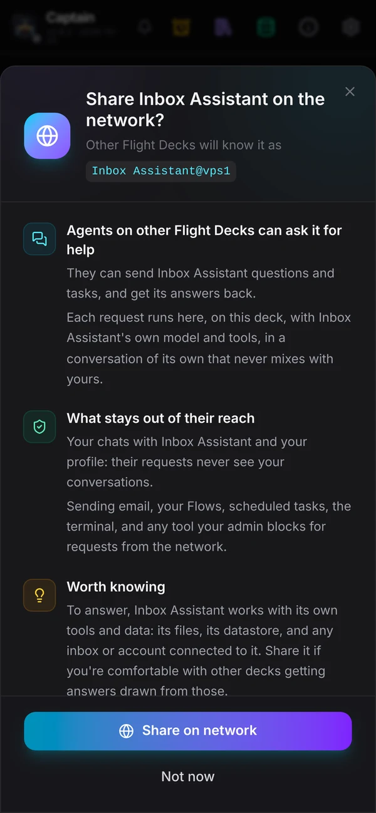
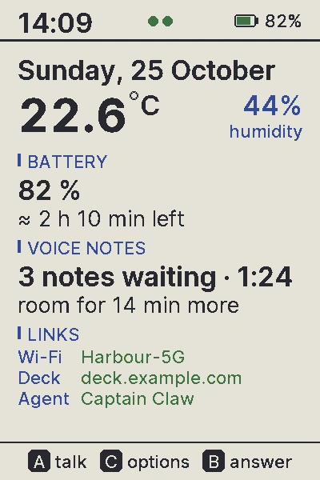
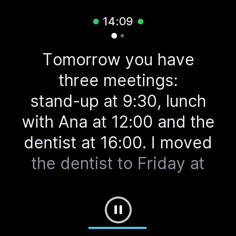
BotPort · deck federation
Every Flight Deck used to be an island. Now any number of them join one network through BotPort, a small hub that is happy on a Raspberry Pi. Your planner on the VPS asks a researcher on the Pi at home, and the answer streams back with live progress, as if both sat on the same deck.
Ask any shared agent on any deck by its address. Consult for a quick answer with live progress, or delegate and get the result in chat.
A Pi behind home NAT or a laptop joins as easily as a server. Only the hub has to be reachable: Tailscale, a tunnel, or its own TLS.
A request from another deck runs in a lane of its own. It never sends email or triggers Flows, can't fan out further, and obeys your deny list.
Decks reconnect, answers wait for a requester that dropped, a worker that dropped gets time to come back, and resubmission is idempotent.
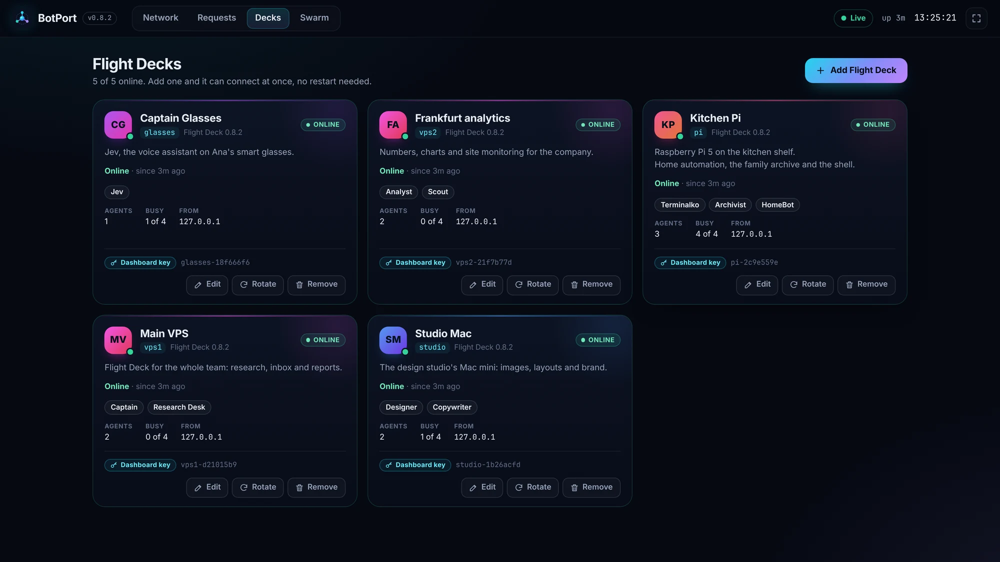
The hub's Decks page
A display name, its address on the network, what it's for. The hub makes its key.
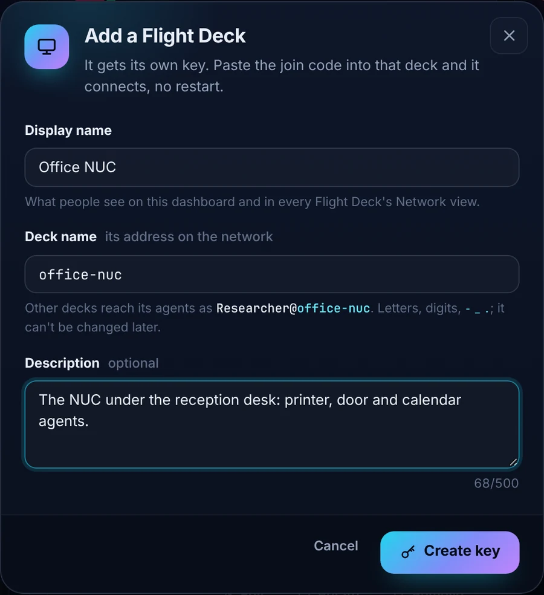
Address, name, key and secret in one line, shown once. The hub keeps only a fingerprint of the secret.
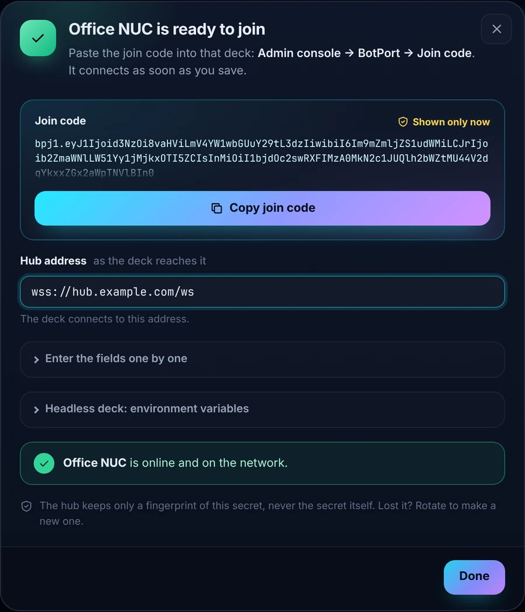
Admin console → BotPort → Join code → Save. It connects, and the hub's dialog turns green.
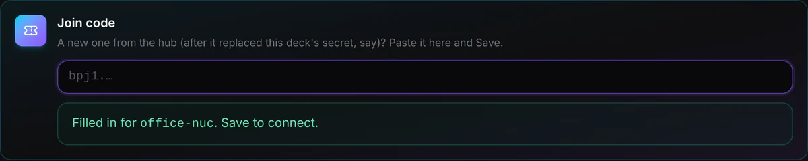
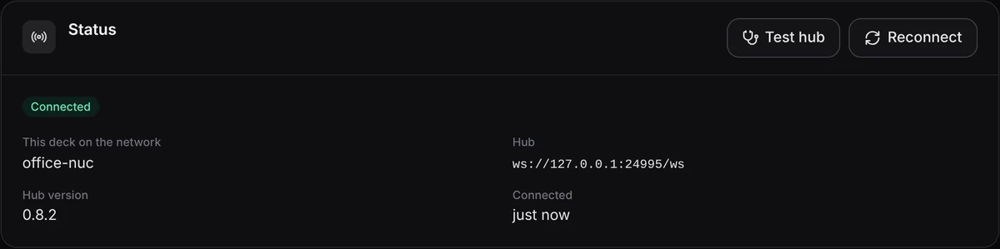
Kiosk mode · press K
The hub's dashboard scales to any screen. Every request is drawn as it travels from the asking deck through the hub to the agent, and the answer flies back. Leave it on a TV in the office and watch your agents work with each other.
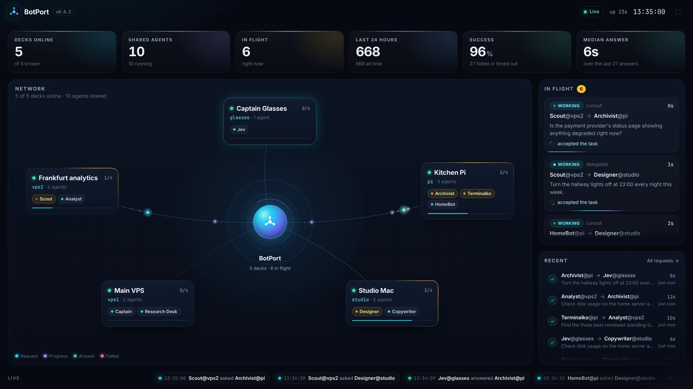
The kiosk
The chat-first view your team's non-admins live in is a complete place to work.
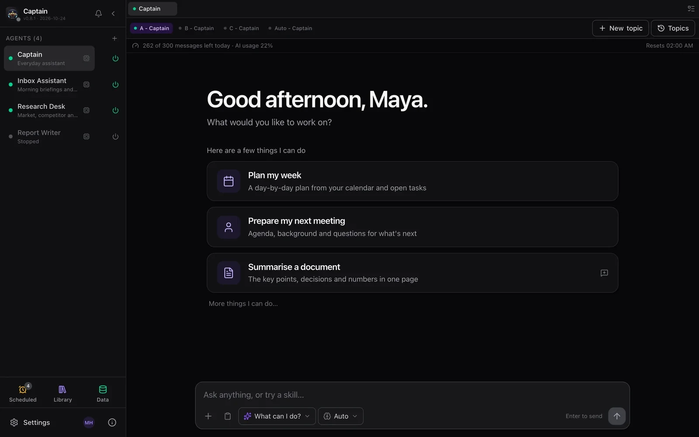
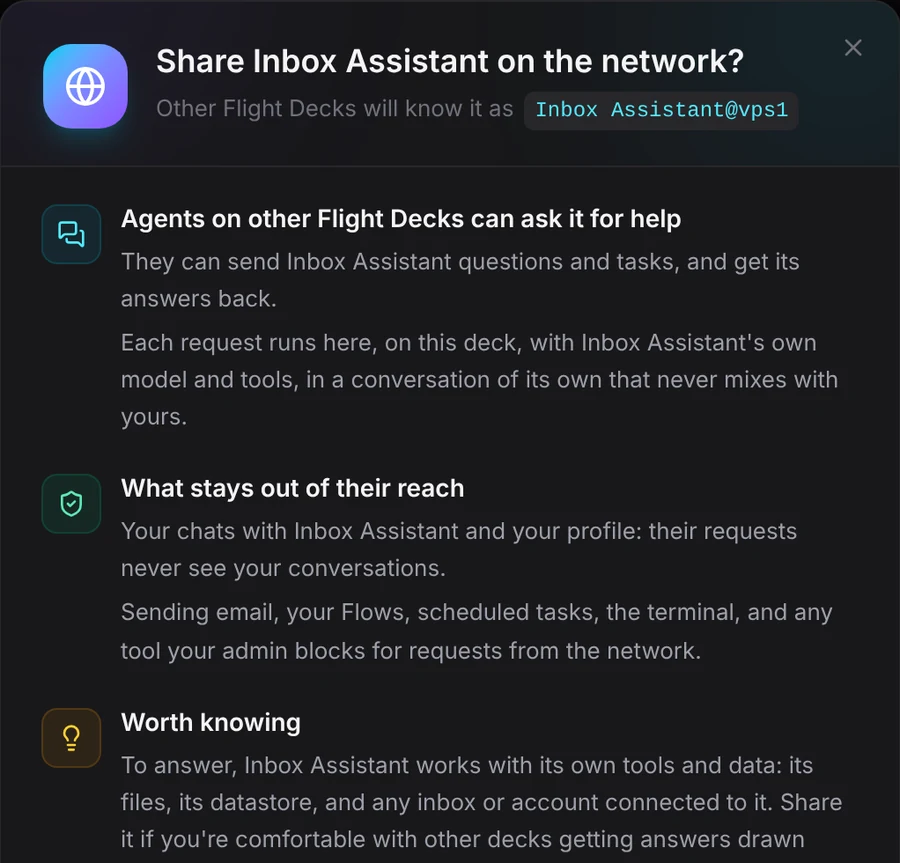
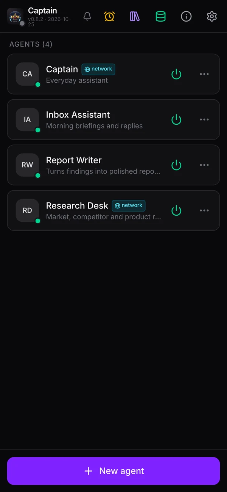
M5Stack StopWatch · PaperColor · StickS3
Press, speak, done. The answer is spoken sentence by sentence while it's still being written, any length, with the text following the voice. Offline, the device keeps voice notes and sends them when the deck is back.
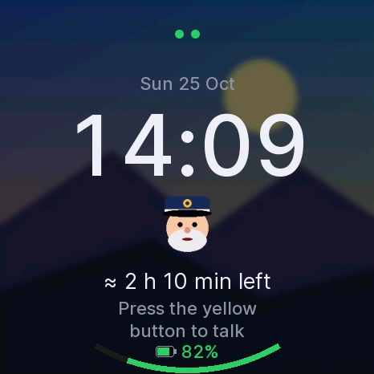
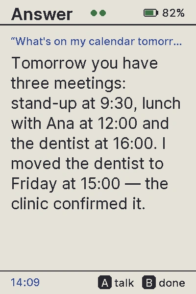
Upgrade to 0.8.2
Flight Decks on 0.8.2 need a hub that speaks protocol 2. Keys you already have keep working; new decks come from the hub's Decks page.
cd ~/captain-claw && git pull
~/botport-venv/bin/pip install ~/captain-claw/botport
scripts/botport-tmux.sh restartcd ~/captain-claw && git pull
pip install .
# restart Flight Deck, then its agentsThe BotPort guide, from pip install on a Raspberry Pi to the first request between two decks.